adjustments.Rmd
# library("inpreg")
devtools::load_all("C:/Users/anderhja/Lokal_folder/Processing-cytokine-data-in-R/")
#> Warning in Sys.setlocale("LC_CTYPE", ctype): OS reports request to set locale to
#> "Norwegian Bokmål_Norway.utf8" cannot be honored
#> i Loading inpreg
#> Loading required package: data.table
#>
#> Loading required package: ggplot2
obj <- inpreg()
#> INFO [2022-11-02 21:21:31] Files imported
#> INFO [2022-11-02 21:21:32] Using FI
#> INFO [2022-11-02 21:21:32] Using log_e-valuesBased on study + id + time
obj$set_batch(batch = NULL)
#> WARN [2022-11-02 21:21:32] Only using samples from batch(es)
df_dup <- obj$find_duplicates()
obj$plot_duplicates(ref = "2", scales = "free")
#> `geom_smooth()` using formula 'y ~ x'
#> Warning: Removed 4 rows containing non-finite values (stat_smooth).
#> Warning: Removed 4 rows containing missing values (geom_point).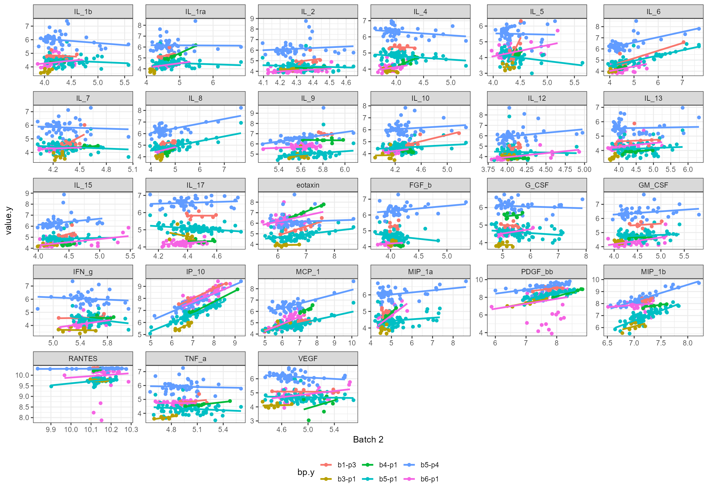
obj$set_batch(batch = c("1", "2", "4"))
#> WARN [2022-11-02 21:21:37] Only using samples from batch(es) 1Only using samples from batch(es) 2Only using samples from batch(es) 4
obj$set_type(type = "X")
#> WARN [2022-11-02 21:21:37] Only using samples of type X
g_pre <- obj$plot_pca()
#> WARN [2022-11-02 21:21:37] Removed -1012 rows due to missing values
obj$adjust_batch_effect(types = "X", ref = "2")
#> INFO [2022-11-02 21:21:37] Adjusting both FI and biorad values
g_post <- obj$plot_pca()
#> WARN [2022-11-02 21:21:38] Removed -1012 rows due to missing values
ggpubr::ggarrange(g_pre, g_post, labels = "AUTO")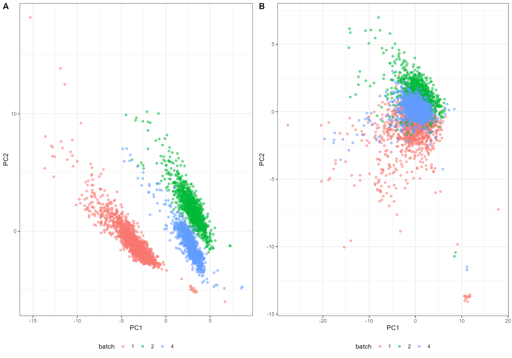
df <- obj$df_cmp(types = "X", wide = FALSE)[, .(value = median(value, na.rm = TRUE)), by = c("bp", "variable", "adjusted")]
ggplot(df, aes(bp, value, color = adjusted)) + geom_point() + facet_wrap(~variable, scales = "free_y") + coord_flip() + obj$my_theme
#> Warning: Removed 28 rows containing missing values (geom_point).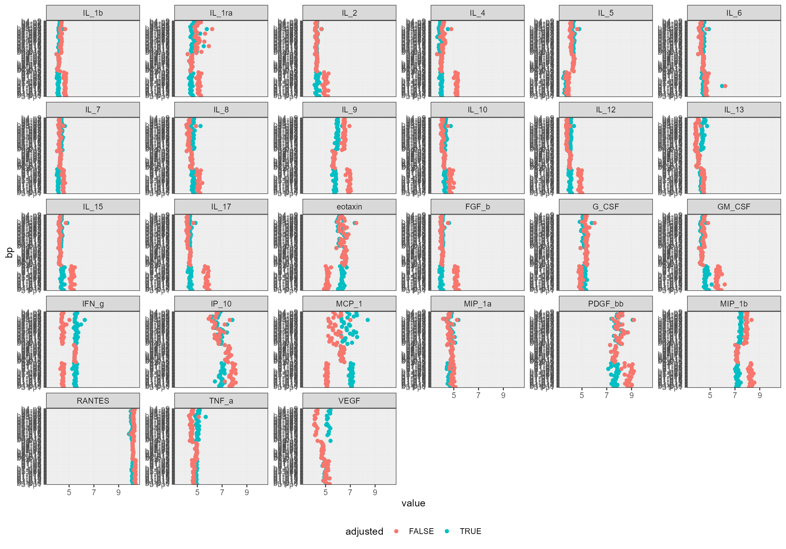
df <- obj$df_cmp(types = "X", wide = FALSE)[, .(value = median(value, na.rm = TRUE)), by = c("bp", "variable", "study", "adjusted")]
ggplot(df, aes("study", value, color = adjusted)) + geom_point() + facet_wrap(~variable, scales = "free_y") + coord_flip() + obj$my_theme
#> Warning: Removed 28 rows containing missing values (geom_point).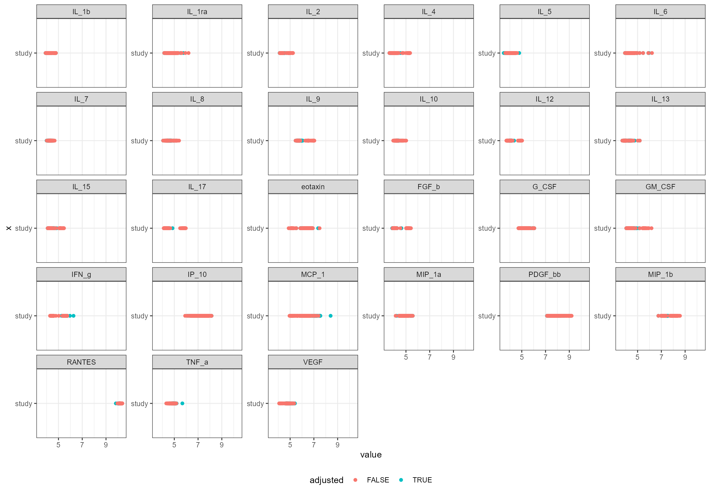
Plate effects are adjusted according to
\[\log\hat{\text{FI}} = \log\text{FI} \cdot \gamma\]
where \(\gamma\) is an adjustment factor calculated by plate as the grand mean (across all plates) divided on the local mean (of the specific plate). The grand mean is calculated within one specific study at one specific time point.
Also, to avoid impact from outliers, we modify our normalization function to remove the top and bottom 10%:
obj$norm_function <- function(x) mean(x, na.rm = TRUE, trim = 0.1)This is the “usual” way:
obj$set_batch(batch = c("1","2"))
#> WARN [2022-11-02 21:21:47] Only using samples from batch(es) 1Only using samples from batch(es) 2
obj$set_type(type = "X")
#> WARN [2022-11-02 21:21:47] Only using samples of type X
g_pre <- obj$plot_pca(color = "plate")
# Adjust the samples in batch 2 using the grand mean of samples from the `overtid` cohort at time point 1
obj$set_batch(batch = c("2"))
#> WARN [2022-11-02 21:21:47] Only using samples from batch(es) 2
obj$adjust_plate_effect(types = "X", ref_study = "overtid", ref_time = 1)
#> INFO [2022-11-02 21:21:47] Adjusting both FI and biorad values
# Adjust the samples in batch 1 using the grand mean of samples from either the `pregmet1` ot `normalflow` cohort at time point 1
obj$set_batch(batch = c("1"))
#> WARN [2022-11-02 21:21:49] Only using samples from batch(es) 1
obj$adjust_plate_effect(types = "X", ref_study = "pregmet1", ref_time = 1)
#> INFO [2022-11-02 21:21:49] Adjusting both FI and biorad values
obj$adjust_plate_effect(types = "X", ref_study = "normalflow", ref_time = 1)
#> INFO [2022-11-02 21:21:50] Adjusting both FI and biorad values
obj$set_batch(batch = c("1","2"))
#> WARN [2022-11-02 21:21:51] Only using samples from batch(es) 1Only using samples from batch(es) 2
g_post <- obj$plot_pca(color = "plate")
ggpubr::ggarrange(g_pre, g_post, labels = "AUTO")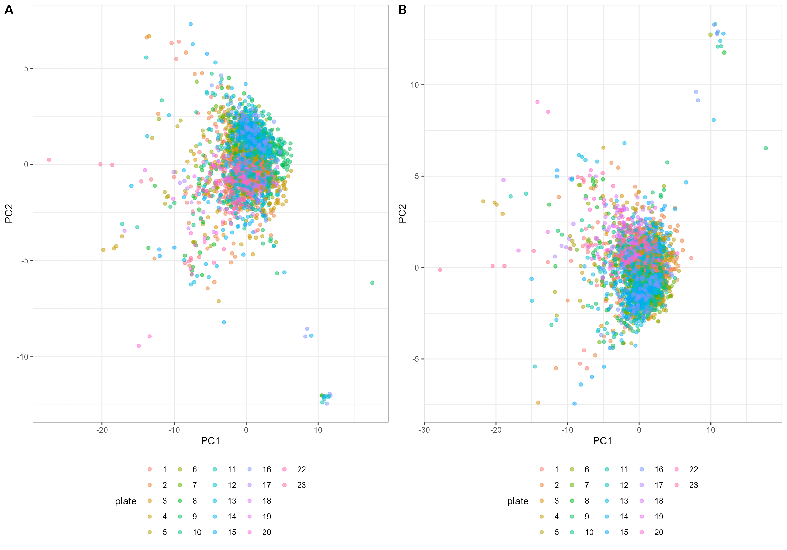
df <- obj$df_cmp(types = "X", wide = FALSE)
ggplot(df, aes(plate, value, color = adjusted)) + geom_point() + facet_wrap(~variable, scales = "free_y")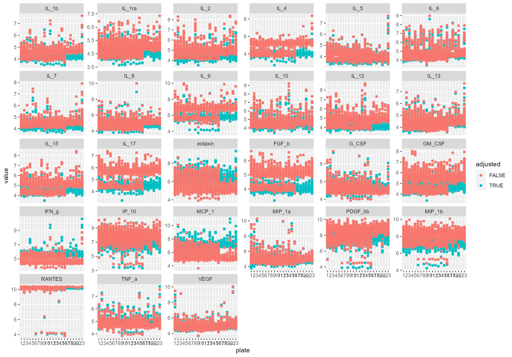
df <- obj$c_o_v(df = obj$df_cmp(types = "X", wide = FALSE), by = c("batch", "study", "adjusted", "time"))
ggplot(df, aes(paste(study, time), cov, color = adjusted)) + geom_point() + facet_wrap(~variable, scales = "free_y") + coord_flip() + obj$my_theme
#> Warning: Removed 108 rows containing missing values (geom_point).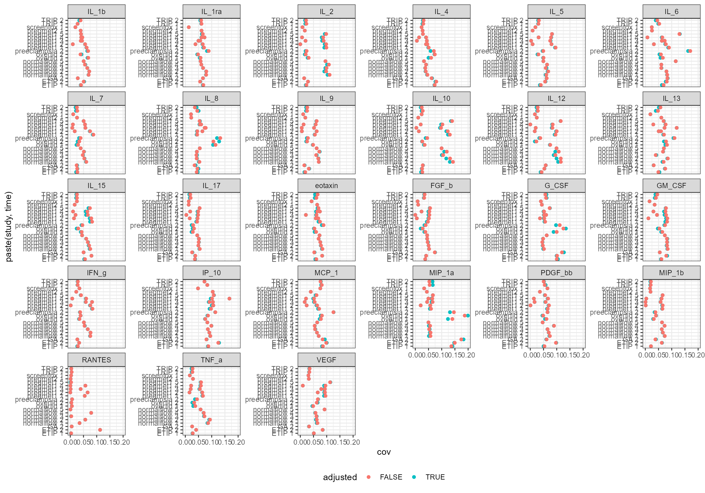
Sometimes, one discovers that the plate design has not been not
optimal. The cohort pregmet2 needs special treatment as
most plates only contained samples from a specific time point - except
three plates with properly randomized samples. We will therefore
calculate a “grand mean” from these three plates.
obj$set_batch(batch = c("4"))
#> WARN [2022-11-02 21:22:11] Only using samples from batch(es) 4
obj$set_type(type = "X")
#> WARN [2022-11-02 21:22:11] Only using samples of type X
g_pre <- obj$plot_pca(color = "plate")
#> WARN [2022-11-02 21:22:11] Removed -1012 rows due to missing values
adjustment_factors <- obj$get_plate_factor(ref_study = "pregmet2", ref_time = c(1,2,3,4,5), ref_plates = c(28, 29, 30))
# Just to check:
ifelse(obj$norm_function(obj$df(types = "X")[actualPlate %in% c(28, 29, 30) & time == 1, IL_1b]) == adjustment_factors[variable == "IL_1b" & time == 1 & plate == 1]$m.x,
"Success!",
"Failure...")
#> [1] "Success!"
ifelse(obj$norm_function(obj$df(types = "X")[actualPlate %in% c(28, 29, 30) & time == 3, IL_1b]) == adjustment_factors[variable == "IL_1b" & time == 3 & plate == 8]$m.x,
"Success!",
"Failure...")
#> [1] "Success!"We can now provide this data frame with adjustment factors directly by looping through time points (the adjustment function will only adjust plates that has such a factor):
for (i in unique(adjustment_factors$time)) {
obj$adjust_plate_effect(df = adjustment_factors[time == i & !plate %in% c(28, 29, 30), ])
}
#> INFO [2022-11-02 21:22:11] Adjusting both FI and biorad values
#> INFO [2022-11-02 21:22:12] Adjusting both FI and biorad values
#> INFO [2022-11-02 21:22:12] Adjusting both FI and biorad values
#> INFO [2022-11-02 21:22:13] Adjusting both FI and biorad values
#> INFO [2022-11-02 21:22:14] Adjusting both FI and biorad valuesTo adjust the three final plates, we must select a specific time factor for each plate. We will use the time point that is most frequent on these plates:
table(
obj$df(types = "X")[plate %in% c(28, 29, 30)][, .(actualPlate, time)]
)
#> time
#> actualPlate 1 2 3 4 5
#> 28 16 16 13 15 13
#> 29 13 12 9 6 12
#> 30 11 11 9 14 12So:
obj$adjust_plate_effect(df = adjustment_factors[time == 1 & plate %in% c(28, 29), ])
#> INFO [2022-11-02 21:22:14] Adjusting both FI and biorad values
obj$adjust_plate_effect(df = adjustment_factors[time == 4 & plate %in% c(30), ])
#> INFO [2022-11-02 21:22:15] Adjusting both FI and biorad values
g_post <- obj$plot_pca(color = "plate")
#> WARN [2022-11-02 21:22:15] Removed -1012 rows due to missing values
ggpubr::ggarrange(g_pre, g_post, labels = "AUTO")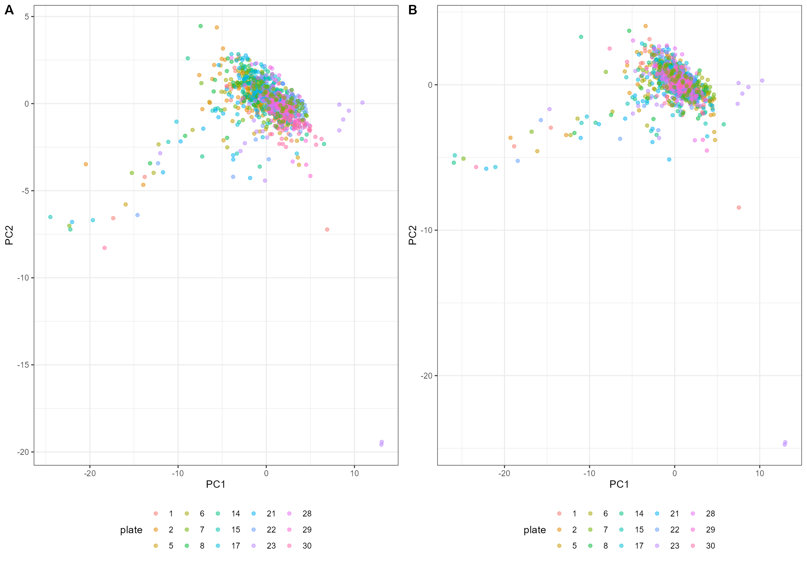
df <- obj$df_cmp(types = "X", wide = FALSE)
ggplot(df[time == 1,], aes(plate, value, color = adjusted)) + geom_boxplot() + facet_wrap(~variable, scales = "free_y")
#> Warning: Removed 460 rows containing non-finite values (stat_boxplot).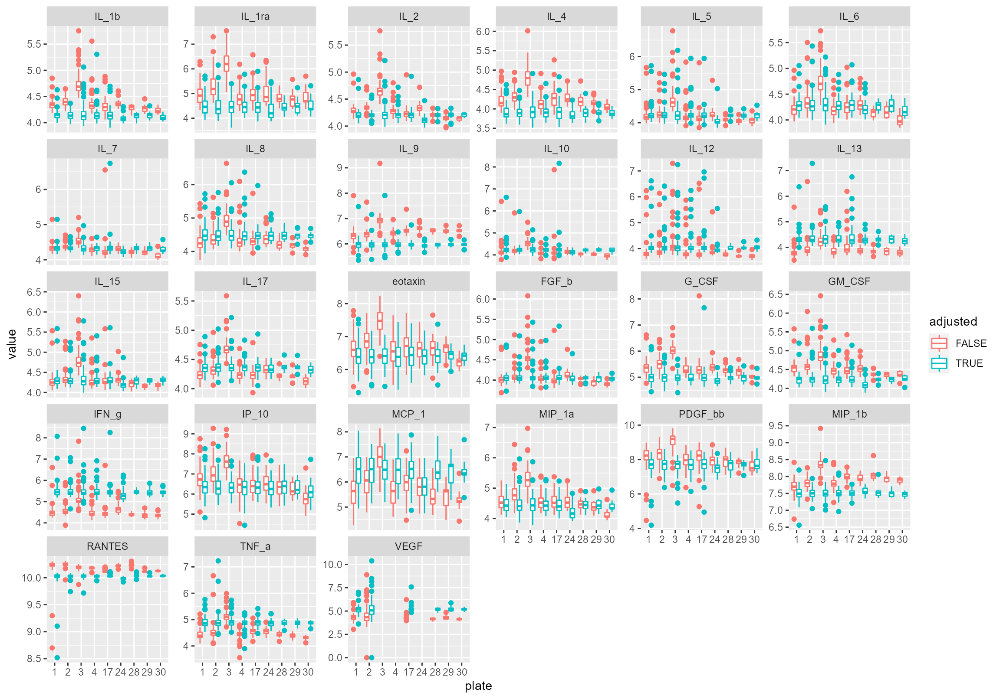
df <- obj$df_cmp(types = "C", wide = FALSE)
ggplot(df, aes(plate, value, color = adjusted, shape = studyno)) + geom_point() + facet_wrap(~variable, scales = "free_y")
#> Warning: Removed 148 rows containing missing values (geom_point).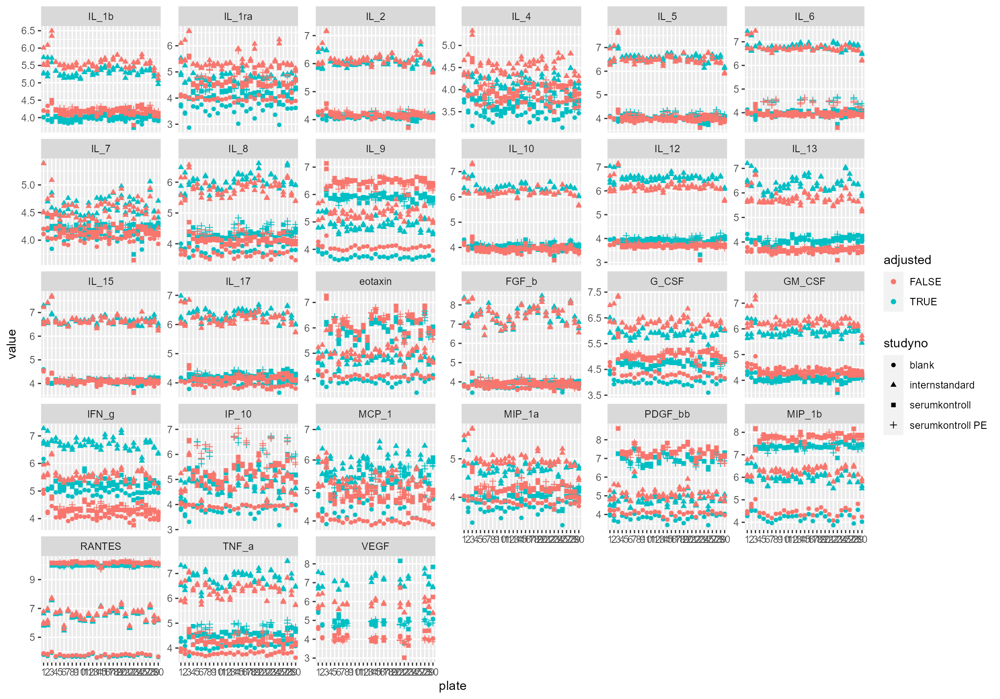
We can calculate COV for adjusted and unadjusted values:
df_cov <- df[, .(COV = sd(value, na.rm = TRUE)/mean(value, na.rm = TRUE)), by = c("studyno", "variable", "adjusted")]
ggplot(df_cov, aes(studyno, COV, group = adjusted, color = adjusted)) + geom_point() + geom_line() + facet_wrap(~variable, scales = "free_y") + theme_bw() + theme(legend.position = "bottom",axis.text.x = element_text(angle = 90, vjust = 0.5, hjust=1))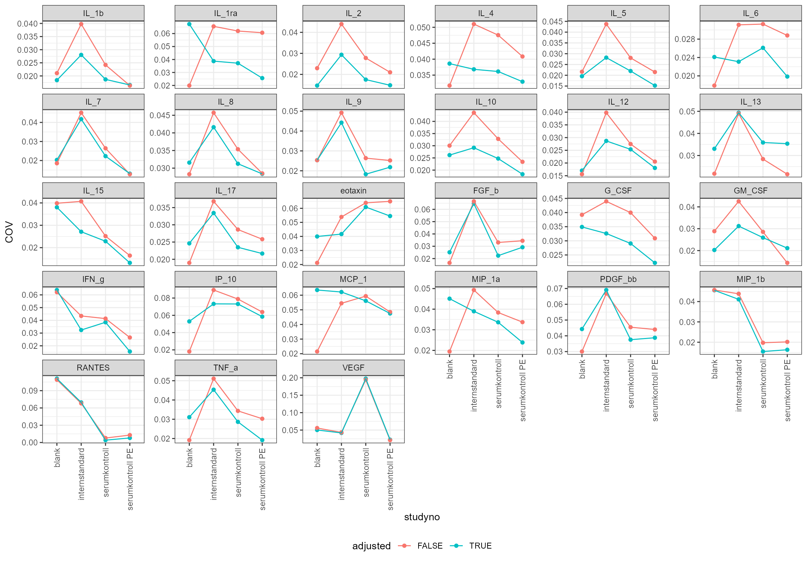
Or, alternatively, by first finding the mean per plate:
df_cov <- df[, .(value_mean = mean(value, na.rm = TRUE)), by = c("variable", "plate", "studyno", "adjusted")][, .(COV = sd(value_mean, na.rm = TRUE)/mean(value_mean, na.rm = TRUE)), by = c("studyno", "variable", "adjusted")]
ggplot(df_cov, aes(studyno, COV, group = adjusted, color = adjusted)) + geom_point() + geom_line() + facet_wrap(~variable, scales = "free_y") + theme_bw() + theme(legend.position = "bottom",axis.text.x = element_text(angle = 90, vjust = 0.5, hjust=1))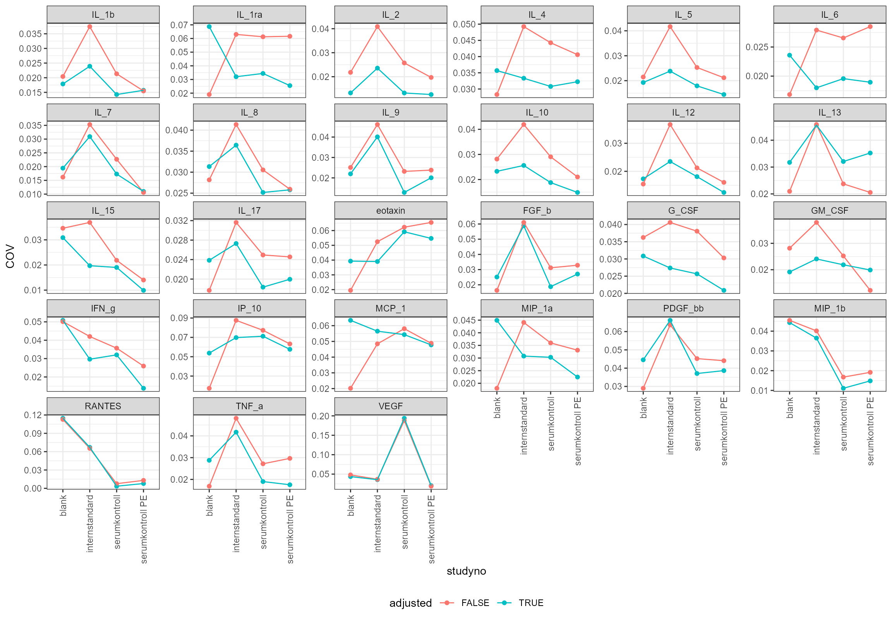